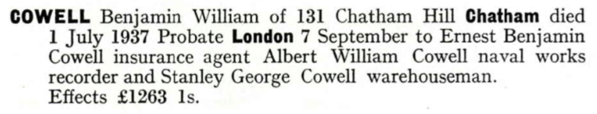
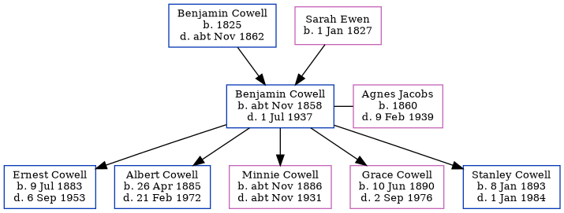

Benjamin William Cowell cNov 1858 - 1937
[ Home ] | [ Calendar ] | [ Surnames Index ] | [ Errors ] | [ Family History ]A woollen warehouse foreman and the child of Benjamin Cowell (a mariner) and Sarah Ewen (a needlewoman), Benjamin Cowell, the second cousin three-times-removed on the mother's side of Nigel Horne, was born in Ramsgate, Kent, England c. Nov 18581,2, was baptised there at St George's Church on 26 Dec 1858 and married Agnes Jacobs (with whom he had 5 children: Ernest Benjamin, Albert William, Minnie Gertrude, Grace Edith and Stanley George) in Medway, Kent, England around May 18814.
During his life, he was living at Belle Vue Hill in Ramsgate on 7 Apr 18619; at 2 Rodney Street in Ramsgate on 2 Apr 187110; at 5 Hope Street, Chatham, Kent on 5 Apr 18918 and on 31 Mar 19016; at 157 Glencoe Road, Chatham, Kent on 2 Apr 19117 and on 19 Jun 192111; and at 131 Chatham Hill, Chatham, Kent in 1937. In 1921 he was working at Clothier Warehouseman on Axe Brand, High Street, Chatham, Kent, England.
He died on 1 Jul 1937 in Medway3 and was buried at Chatham Cemetery, Maidstone Road, Chatham, Kent on 5 Jul 19375.
Parents
- Benjamin was born in 1825
- Sarah was born on 1 Jan 1827
Children
- Ernest Benjamin was born on 9 Jul 1883
- Albert William was born on 26 Apr 1885
- Minnie Gertrude was born c. Nov 1886
- Grace Edith was born on 10 Jun 1890
- Stanley George was born on 8 Jan 1893
Citations
- England & Wales births 1837-2006 - Findmypast
- Kent Burials - Findmypast
- England & Wales deaths 1837-2007 - Findmypast
- England & Wales marriages 1837-2008 - Findmypast
- Kent Burials - Findmypast
- 1901 England, Wales & Scotland Census - Findmypast (was age 42 and the head of the household)
- 1911 Census for England & Wales - Findmypast (was age 52 and the head of the household)
- 1891 England, Wales & Scotland Census - Findmypast (was age 32 and the head of the household)
- 1861 England, Wales & Scotland Census - Findmypast (was age 2 and the son of the head of the household)
- 1871 England, Wales & Scotland Census - Findmypast (was age 12 and the son of the head of the household)
- 1921 Census Of England & Wales - Findmypast (was age 62 and the head of the household)
Media
Benjamin William Cowell - probate

England & Wales births 1837-2006 - BMD/B/1858/4/AF/000829/005
1891 England, Wales & Scotland Census - GBC/1891/0005444121
England & Wales marriages 1837-2008 - BMD/M/1881/2/AZ/000061/111
England & Wales deaths 1837-2007 - BMD/D/1937/3/AZ/000160/139
1861 England, Wales & Scotland Census - GBC/1861/0003537005
1871 England, Wales & Scotland Census - GBC/1871/0014299389
Kent Burials - KENT/FHS/BUR/CIVIL/012222
England Births & Baptisms 1538-1975 - R_884616079
1921 Census Of England & Wales - GBC/1921/RG15/04068/0321/01
Family Tree
Map
Generated by ged2site. Last updated on Jul 3, 2024
Known Issues
Residence record for 1937 contains no citation
Listed in the residence for 1937, but spouse Agnes Jacobs is not
Census information missing between Census UK 1871 and Census UK 1891